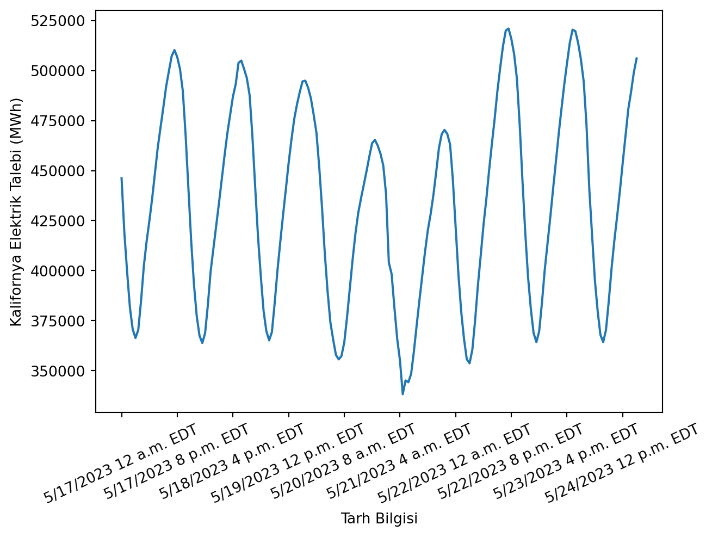
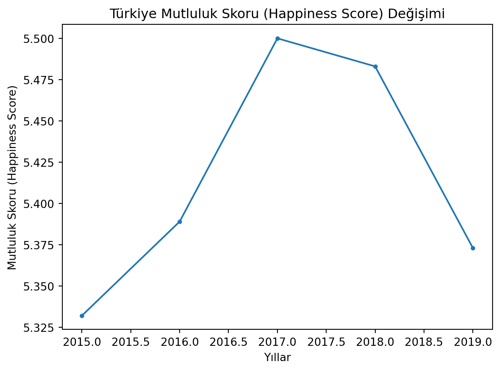
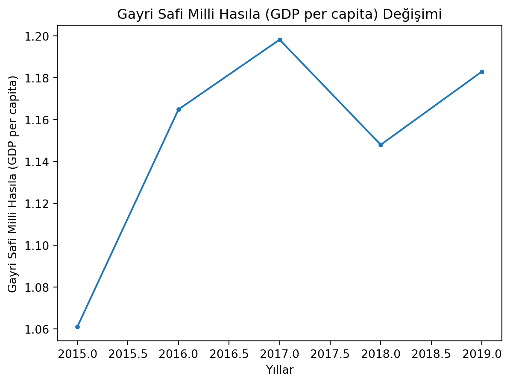

Amerika’daki Kalifornya eyaletinin elektrik tüketimini veren bu veriyi okuyun [1]. Okuma tarihi 25.05.2023.
İlk ve son 5 satırını yazdırın.
Timestamp (Hour Ending) sütun ismini Tarih Bilgisi yapın.
Demand (MWh) sütun ismini Talep (MWh) yapın.
Talep (MWh) sütununundaki NaN olan satırlarını silin.
Yatayda Tarih Bilgisi, düşeyde Talep (MWh) olacak şekilde bir grafik çizin.
Çözüm
################################################import os# Bu dosyanın bulunduğu dizini alcurrent_dir = os.path.abspath('')# 3 üst dizine çıkveri_dir = os.path.join(\ os.path.abspath(\ os.path.join(\ current_dir, os.pardir, os.pardir, os.pardir))\ , 'veri')################################################import numpy as npimport pandas as pdimport matplotlib.pyplot as plt# Okudf = pd.read_csv(veri_dir+"/veri-930-data-export.csv", delimiter=",")# İlk ve son 5 satırprint(df.head())print(df.tail())# Sütun isimlerini değiştirdf.rename(columns={"Timestamp (Hour Ending)":"Tarih Bilgisi"}, inplace=True)df.rename(columns={"Demand (MWh)":"Talep (MWh)"}\ , inplace=True)# NaN satırlarını "Talep (MWh)" sütunundan sildf.dropna(subset=["Talep (MWh)"], inplace=True)# Çizplt.plot(df["Tarih Bilgisi"], df["Talep (MWh)"])plt.xlabel("Tarh Bilgisi")plt.ylabel("Kalifornya Elektrik Talebi (MWh)")plt.xticks(rotation=25)plt.xticks(np.arange(0, len(df), step=20))plt.show()plt.close()
Region Code Timestamp (Hour Ending) Demand (MWh) Demand Forecast (MWh) \
0 US48 5/17/2023 12 a.m. EDT 446173.0 438971
1 US48 5/17/2023 1 a.m. EDT 418994.0 412814
2 US48 5/17/2023 2 a.m. EDT 399252.0 389905
3 US48 5/17/2023 3 a.m. EDT 381525.0 373869
4 US48 5/17/2023 4 a.m. EDT 370696.0 363882
Net Generation (MWh) Total Interchange (MWh)
0 438045.0 -5573.0
1 410208.0 -5438.0
2 389248.0 -5768.0
3 372178.0 -4785.0
4 363001.0 -4675.0
Region Code Timestamp (Hour Ending) Demand (MWh) Demand Forecast (MWh) \
188 US48 5/24/2023 8 p.m. EDT NaN 504300
189 US48 5/24/2023 9 p.m. EDT NaN 494357
190 US48 5/24/2023 10 p.m. EDT NaN 479733
191 US48 5/24/2023 11 p.m. EDT NaN 457902
192 US48 5/25/2023 12 a.m. EDT NaN 431842
Net Generation (MWh) Total Interchange (MWh)
188 NaN NaN
189 NaN NaN
190 NaN NaN
191 NaN NaN
192 NaN NaN
/opt/hostedtoolcache/Python/3.10.14/x64/lib/python3.10/site-packages/dateutil/parser/_parser.py:1207: UnknownTimezoneWarning: tzname EDT identified but not understood. Pass `tzinfos` argument in order to correctly return a timezone-aware datetime. In a future version, this will raise an exception.
warnings.warn("tzname {tzname} identified but not understood. "

Alıştırma 2
Bu linkte, ülkelerin mutluluk skorları ve bunlar ile ilintili bilgilerin olduğu csv dosyaları bulunmaktadır. Her yıl için, 2015, 2016, 2017, 2018, 2019, indirin ve aşağıdaki soruları cevaplayın.
Beş yıllık veri setini tek bir veri setinde birleştirin.
Türkiye’nin mutluluk skorunu yıllara göre nasıl değiştiğini grafik gösterin.
Türkiye’nin gayri safi milli hasılası (GSMH, sütunlarda GDP per capita isminde) yıllara göre nasıl değiştiğini grafik üzerinde gösterin.
Çözüm
################################################import os# Bu dosyanın bulunduğu dizini alcurrent_dir = os.path.abspath('')# 3 üst dizine çıkveri_dir = os.path.join(\ os.path.abspath(\ os.path.join(\ current_dir, os.pardir, os.pardir, os.pardir))\ , 'veri')################################################import pandas as pdimport matplotlib.pyplot as plt# 2015happiness2015 = pd.read_csv(veri_dir+'/veri_mutluluk_2015.csv')happiness2015['Year'] =2015happiness2015.rename(columns={'Happiness Score': 'Score', 'Economy (GDP per Capita)': 'GDP per capita'}, inplace=True)# 2016happiness2016 = pd.read_csv(veri_dir+'/veri_mutluluk_2016.csv')happiness2016['Year'] =2016happiness2016.rename(columns={'Happiness Score': 'Score', 'Economy (GDP per Capita)': 'GDP per capita'}, inplace=True)# 2017happiness2017 = pd.read_csv(veri_dir+'/veri_mutluluk_2017.csv')happiness2017['Year'] =2017happiness2017.rename(columns={'Happiness.Score': 'Score', 'Economy..GDP.per.Capita.': 'GDP per capita'}, inplace=True)# 2018happiness2018 = pd.read_csv(veri_dir+'/veri_mutluluk_2018.csv')happiness2018['Year'] =2018happiness2018.rename(columns={'Country or region': 'Country'}, inplace=True)# 2019happiness2019 = pd.read_csv(veri_dir+'/veri_mutluluk_2019.csv')happiness2019['Year'] =2019happiness2019.rename(columns={'Country or region': 'Country'}, inplace=True)# Ortak sütunlarhappiness = pd.concat([happiness2015, happiness2016, happiness2017, happiness2018, happiness2019], ignore_index=True)# Türkiyeturkiye = happiness[happiness['Country'] =='Turkey']print(turkiye.head())# Çizplt.plot(turkiye['Year'], turkiye['Score'], marker='.')plt.xlabel('Yıllar')plt.ylabel('Mutluluk Skoru (Happiness Score)')plt.title('Türkiye Mutluluk Skoru (Happiness Score) Değişimi')plt.show()plt.close()# Gayri Safi Milli Hasıla# Çizplt.plot(turkiye['Year'], turkiye['GDP per capita'], marker='.')plt.xlabel('Yıllar')plt.ylabel('Gayri Safi Milli Hasıla (GDP per capita)')plt.title('Gayri Safi Milli Hasıla (GDP per capita) Değişimi')plt.show()
Country Region Happiness Rank Score \
75 Turkey Middle East and Northern Africa 76.0 5.332
235 Turkey Middle East and Northern Africa 78.0 5.389
383 Turkey NaN NaN 5.500
543 Turkey NaN NaN 5.483
704 Turkey NaN NaN 5.373
Standard Error GDP per capita Family Health (Life Expectancy) \
75 0.03864 1.060980 0.946320 0.73172
235 NaN 1.164920 0.877170 0.64718
383 NaN 1.198274 1.337753 NaN
543 NaN 1.148000 NaN NaN
704 NaN 1.183000 NaN NaN
Freedom Trust (Government Corruption) ... Whisker.high Whisker.low \
75 0.228150 0.15746 ... NaN NaN
235 0.238890 0.12348 ... NaN NaN
383 0.300741 NaN ... 5.594865 5.405135
543 NaN NaN ... NaN NaN
704 NaN NaN ... NaN NaN
Health..Life.Expectancy. Trust..Government.Corruption. \
75 NaN NaN
235 NaN NaN
383 0.637606 0.099672
543 NaN NaN
704 NaN NaN
Dystopia.Residual Overall rank Social support Healthy life expectancy \
75 NaN NaN NaN NaN
235 NaN NaN NaN NaN
383 1.879278 NaN NaN NaN
543 NaN 74.0 1.38 0.686
704 NaN 79.0 1.36 0.808
Freedom to make life choices Perceptions of corruption
75 NaN NaN
235 NaN NaN
383 NaN NaN
543 0.324 0.109
704 0.195 0.106
[5 rows x 26 columns]


Problemler
Problem 1
Github sitesinde bulunan veri_imdb_1e5rows.tsv dosyasındaki verinin metadatasına inceleyin. Bu veri, title.akas.tsv.gz adlı dosyanın ilk \(10^{5}\) satırıdır. Bu veriyi pd.read_table() fonksiyonu ile okuyun.
Eğer tüm veri ile çalışmak istiyorsanız (1.8 gb) şu linkteki dosyayı indirin. Bu dosya sıkıştırılmış dosyadır. Bu dosyayı indirdikten sonra dışarı aktarın.
Bu veri hakkında aşağıdaki soruları cevaplayın.
Bu verinin sütunları nelerdir?
Bu verinin kaç sütunu var?
Bu verinin kaç satırı var?
Bu verinin ilk 2 satırını gösterin.
Bu verinin son 2 satırını gösterin.
Bu veri setindeki tüm biricik dilleri (language) gösterin.
Bu veri setindeki tüm biricik bölgeleri (region) gösterin.
Bu veri setindeki her bir biricik dilde kaç adet film vardır?
Bu veri setindeki her bir biricik bölgede kaç adet film vardır?
Bu veri setindeki attributes sütununu çıkarın (değişkene atayın).
Bu verideki sütunların veri tiplerini ekrana yazdırın.
Bu verinin ordering sütununu tam sayı haline getirin (değişkene atayın).
Bu verinin isOriginalTitle sütununu bool haline getirin (değişkene atayın).
Bu verinin etiketlerini titleId olacak şekilde gösterin (değişkene atayın).
Bu verinin etiketini titleId ve title olarak değiştirin (değişkene atayın).
Bu veriyi titleId sütununa göre sıralayın (değişkene atayın).
Bu verideki tüm \N değerlerini pd.NA değerleri ile değiştirin (değişkene atamayın).
Bu verinin titleId ve title etiketlerini tekrar sütun haline getirin (değişkene atayın).
Bu verideki types sütunu içerisinde olan original verisine sahip satırları gösterin ve sonucu df2 değişkenine atayın.
Bu veride isOriginalTitle sütunu True olan satırları gösterin ve sonucu df2 ile karşılaştırın. Yani elde ettiğiniz veri ile df2 verisi aynı mı? Değilse hangi satırlar farklı?
Problem 2
TÜİK’in veri merkezinde bulunan “Hava Alanlarında Toplam Yolcu ve Yük Trafiği” verisini indirin. Bu veri dosyasında yani dosyayı bir office programında açıp herhangi bir değişiklik yapmayın!
Aşağıdaki soruları cevaplayın.
Bu excel dosyasını okuyun ve df değişkenine atayın. (Not: read_excel fonksiyonu ile okumak için xlrd kütüphanesini kurmanız gerekebilir. pip install xlrd komutu ile kurabilirsiniz.)
Veri çerçevesini gösterin.
Veri çerçevesi temizleyin. Bu temizlemeyi excel dosyasını açıp değil pandas ile yapın. Bu temizlemeyi aşağıdaki grafikleri çizebilmek için yapın:
Toplam Yolcu - Yıl grafiğini çizdirin. Aynı grafik üzeride iç hat yolcusu ve dış hat yolcusunun yıllara göre grafiği de olsun.
Toplam Yükün (Ton), iç hat yükünün (Ton) ve dış hat yükünün (Ton) yıllara göre grafiğini çizdirin.